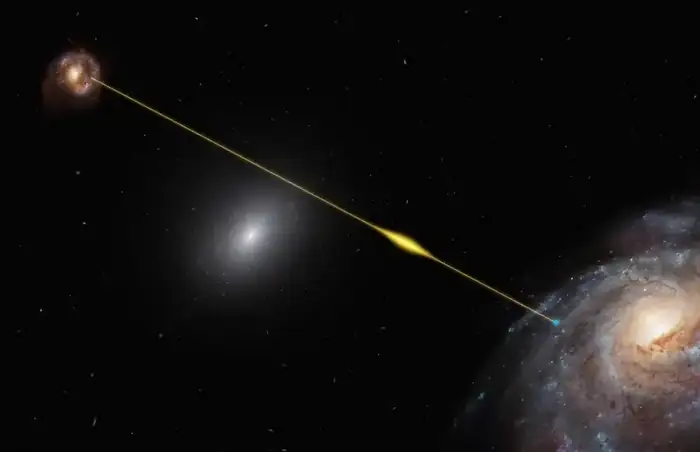
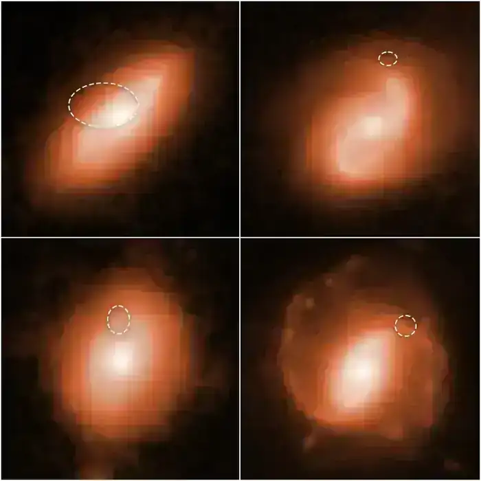
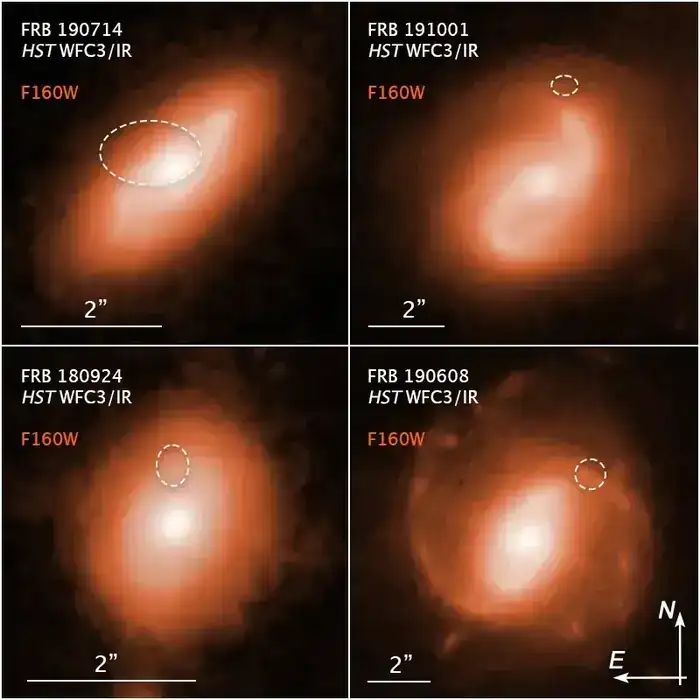
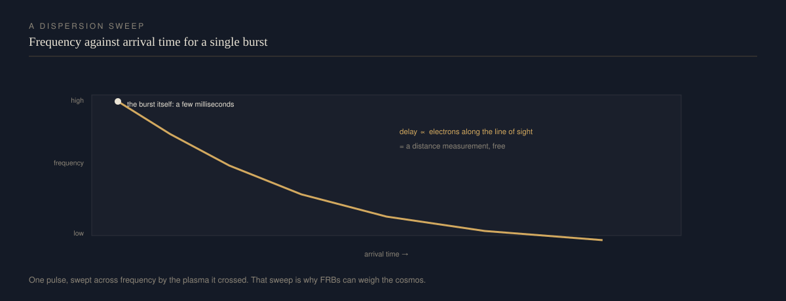

The discovery, and the retraction
In 2007, Duncan Lorimer and colleagues reported a 5-millisecond radio pulse in archival data from the Parkes telescope in Australia, with a dispersion measure far larger than any Galactic source could produce. The dispersion measure is the delay between high and low frequencies caused by free electrons along the line of sight — a distance proxy. Their burst implied an extragalactic origin.
Maps, diagrams and images






Six years later, a paper reported sixteen similar bursts from Parkes and concluded they were cosmological. Within months, the same group retracted: the signals were coming from an open microwave oven in the observatory kitchen, opened while the receiver was pointing at it. The original Lorimer burst survived. The lesson — check your local environment before claiming the universe — is now standard practice.
What settled it
Localisation. In 2017, a repeating burst (FRB 121102) was pinpointed to a dwarf galaxy about 3 billion light years away, using interferometry with the VLA and the European VLBI network. Since then, hundreds have been localised, and the Canadian CHIME telescope — a fixed array that sees a huge fraction of the sky — has catalogued thousands. Most appear in star-forming regions of other galaxies.
What causes them
At least some come from magnetars, the ultra-magnetic neutron stars. In 2020, a burst from the Galactic magnetar SGR 1935+2154 was detected simultaneously in radio and X-rays, with a radio energy far below extragalactic FRBs but with the right signature. Whether magnetars explain all of them, and what produces the repeaters as opposed to the one-off bursts, is unresolved.
Documented: the bursts exist, are extragalactic, last milliseconds, and carry dispersion and Faraday rotation that make them probes of intergalactic plasma.
Documented: magnetars can produce them — the 2020 Galactic event is direct evidence.
Open: the engine for the brightest extragalactic bursts, and why only a few percent repeat.
Why it matters: the dispersion measure counts electrons across billions of light years, so FRBs are one of the few ways to weigh the “missing” baryons in the intergalactic medium.
Why it belongs in a hidden-world archive
Because it is the honest version of a story the fringe tells constantly: a signal from outside, initially dismissed, later confirmed. The difference is that the confirmation came from a second instrument, an identified host galaxy and a Galactic counterpart — not from a reinterpretation of the same noisy data.
Sources for this page
- Wikipedia, “Fast radio burst” — discovery, localisation and modelsen.wikipedia.org
- Lorimer et al. (2007), Science — the first reported burstdoi.org
- Chatterjee et al. (2017), Nature — localisation of a repeater to a dwarf galaxydoi.org
- CHIME/FRB Collaboration — the cataloguechime-frb.ca
Open resources on this topic
- BookFast radio bursts: the observational case for a Galactic origin — ['Dan Maoz', 'Abraham Loeb', 'Yossi Shvartzvald', 'Monika Si · 2015 (Internet Archive, free to read)
- BookDense plasma dispersion of fast radio bursts — Artem V. Tuntsov · 2014 (Internet Archive, free to read)
- BookDark Matter-induced Collapse of Neutron Stars: A Possible Link Between Fast Radio Bursts and the Missing Pulsa — ['Jim Fuller', 'Christian Ott'] · 2014 (Internet Archive, free to read)
- PapersOpen-access articles: DOAJ · PubMed Central · Internet Archive Scholar
- BooksPublic-domain and borrowable copies: Open Library · Project Gutenberg · Google Books
Cite this page
Momin, S. (2026). Fast Radio Bursts. The Larger World Archive. https://drsamonline.github.io/LARGE_GLOBE/fast-radio-bursts.htmlMomin, Sohil. “Fast Radio Bursts.” The Larger World Archive, 2026, https://drsamonline.github.io/LARGE_GLOBE/fast-radio-bursts.html.Momin, Sohil. “Fast Radio Bursts.” The Larger World Archive, 2026. https://drsamonline.github.io/LARGE_GLOBE/fast-radio-bursts.html.@misc{fast2026fast,
author = {Momin, Sohil},
title = {Fast Radio Bursts},
year = {2026},
howpublished = {The Larger World Archive},
url = {https://drsamonline.github.io/LARGE_GLOBE/fast-radio-bursts.html},
note = {Last reviewed 20 November 2026}
}Last reviewed 20 November 2026 · Corrections policy · this page is not peer reviewed